Shared autonomy holds promise for improving the usability and accessibility of assistive robotic arms, but current methods often rely on costly expert demonstrations and remain static after pretraining, limiting their ability to handle real-world variations. Even with extensive training data, unforeseen challenges—especially those that fundamentally alter task dynamics, such as unexpected obstacles or spatial constraints—can cause assistive policies to break down, leading to ineffective or unreliable assistance. To address this, we propose ILSA, an Incrementally Learned Shared Autonomy framework that continuously refines its assistive policy through user interactions, adapting to real-world challenges beyond the scope of pre-collected data. At the core of ILSA is a structured fine-tuning mechanism that enables continual improvement with each interaction by effectively integrating limited new interaction data while preserving prior knowledge, ensuring a balance between adaptation and generalization. A user study with 20 participants demonstrates ILSA's effectiveness, showing faster task completion and improved user experience compared to static alternatives.
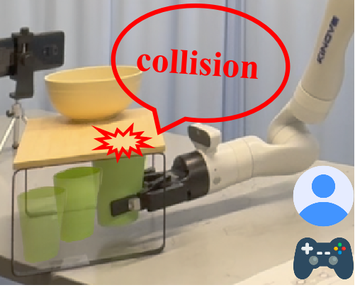
First Interaction
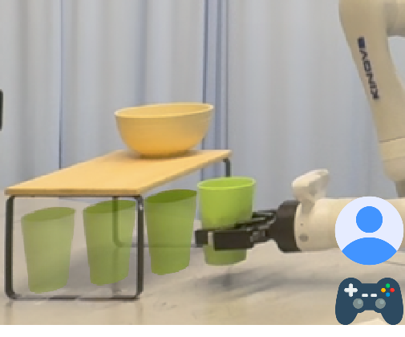
Fourth Interaction
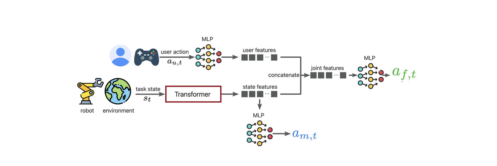
At the core of ILSA is a structured fine-tuning mechanism that enables continual improvement with each interaction. This frequent adaptation is particularly challenging due to limited deployment data, which can affect model stability and generalizability.
To address this, our fine-tuning mechanism consists of three key components:
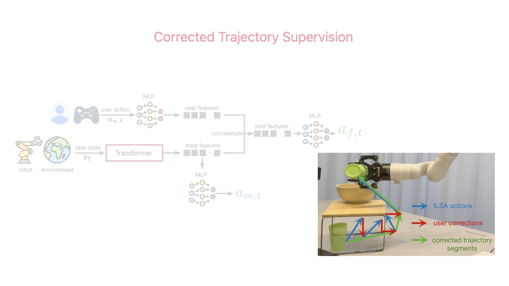
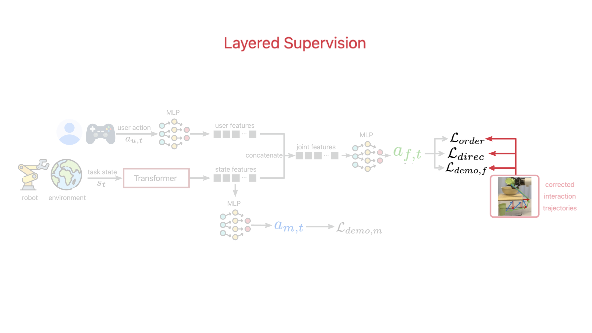
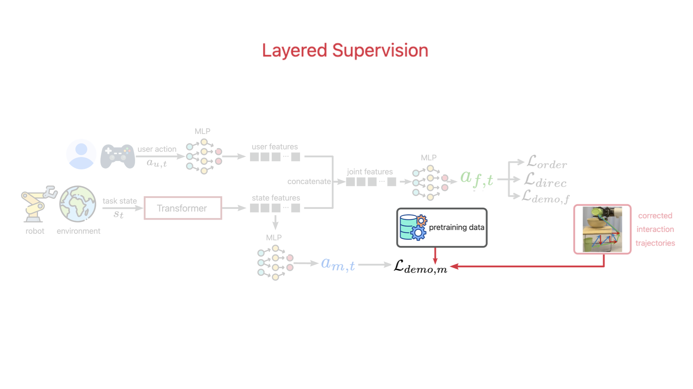
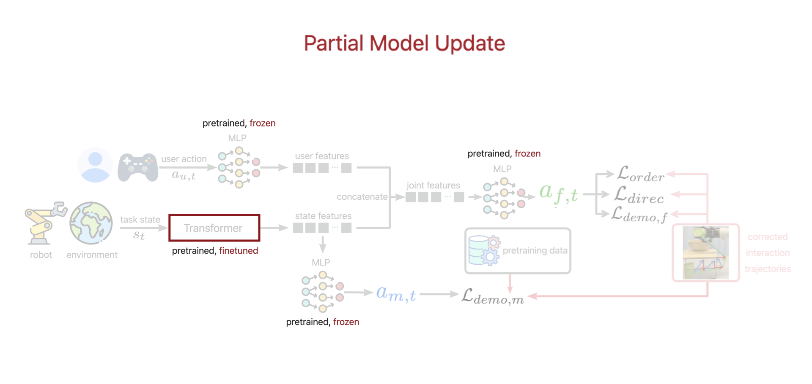
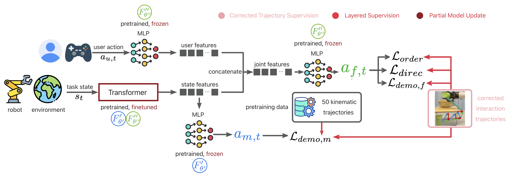
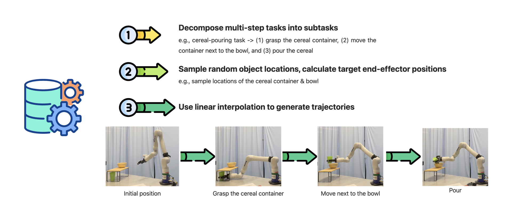
In the first interactions, ILSA lacks the knowledge to avoid collisions, leading to objects hitting obstacles.
After just a few interactions, ILSA has learned effective collision avoidance, helping users complete tasks more smoothly.
Pure teleoperation
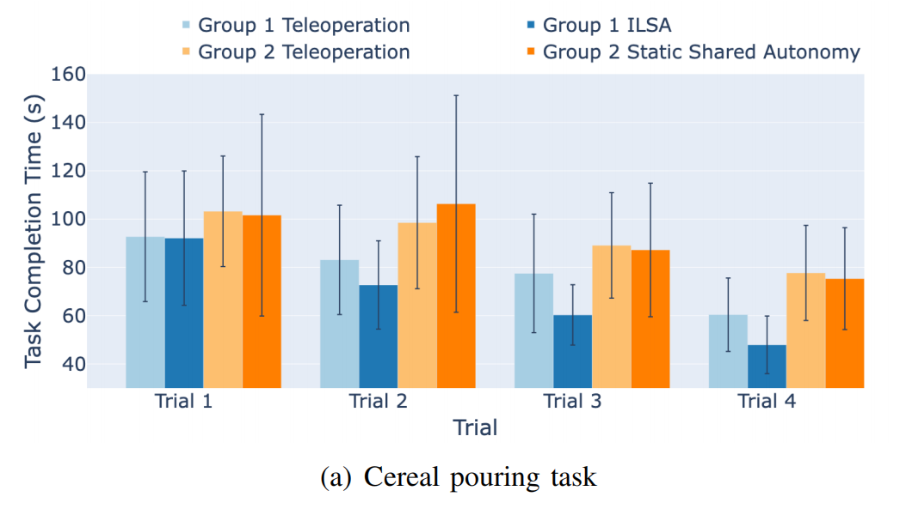
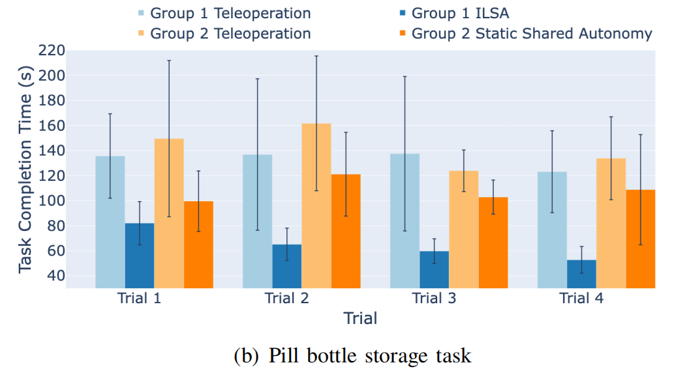
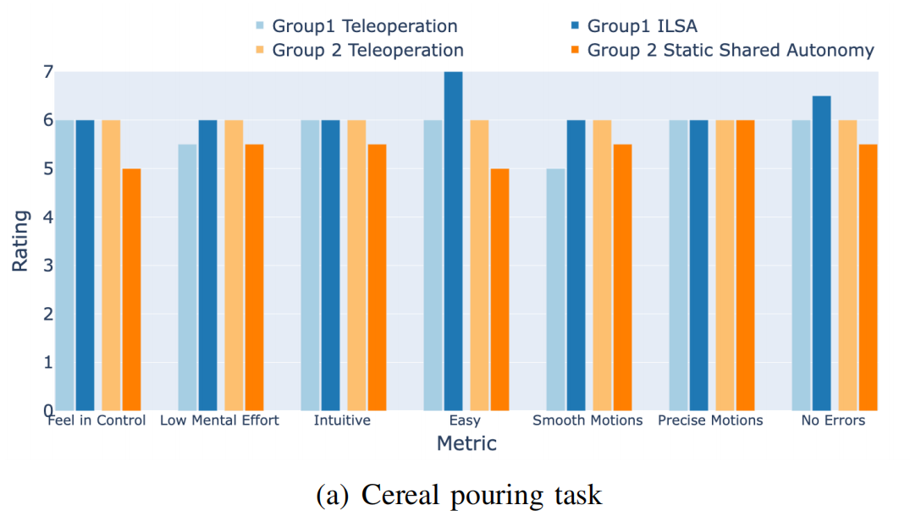
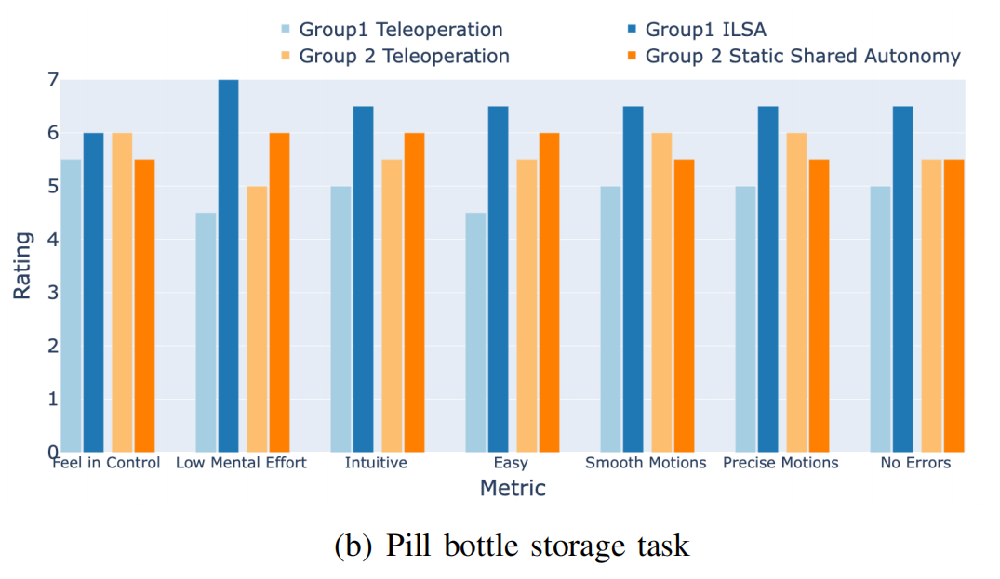
@misc{tao2024incrementallearningrobotshared,
title={Incremental Learning for Robot Shared Autonomy},
author={Yiran Tao and Guixiu Qiao and Dan Ding and Zackory Erickson},
year={2024},
eprint={2410.06315},
archivePrefix={arXiv},
primaryClass={cs.RO},
url={https://arxiv.org/abs/2410.06315},
}